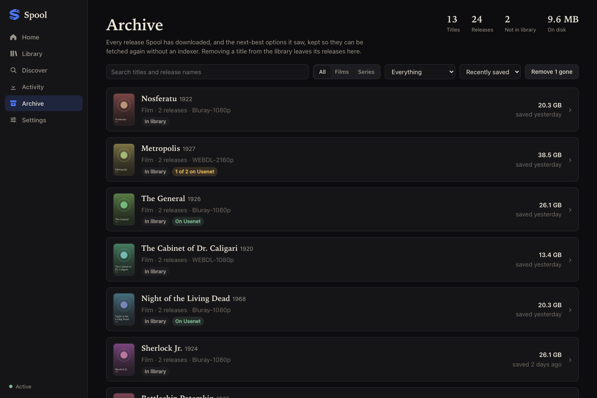

Every release Spool sees gets a verdict and a reason. What it takes is checked before it is fetched, repaired and unpacked as it arrives, and remembered after it has gone.
What it does
Each release it sees gets a recorded verdict: accepted, or rejected with the reason. "Why didn't it take that one" always has an answer.
A release is sampled on your Usenet servers first. Posts that have expired are skipped in seconds, not after an hour.
Uncompressed RAR posts are unpacked volume by volume while they arrive, so they need about half the room and no extraction step.
For series it prefers a pack or one group's complete run over a scatter of episodes, and searches by name when an indexer's ids fall short.
Profiles carry a size target. Oversized releases are a last resort, and a file that is too big can be swapped for a smaller copy.
Keep a 4K copy beside a small one, or two cuts of the same film. Upgrades replace the main file and leave the others alone.
It knows what language a title was made in, ranks dubs last, and follows anime's own episode numbering.
Releases named without a year, never linked to an id, or handed over with garbled non-Latin text are still recognised for what they are.
It starts in a mode that changes nothing, journals every import, recycles replaced files and will not write when the media disk is missing.
The archive
Spool keeps the small file that describes every release it downloads, and the next-best options beside it.
